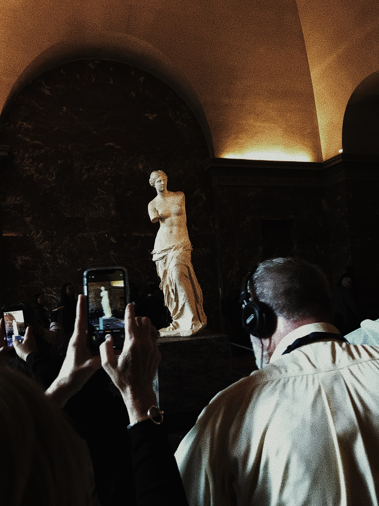
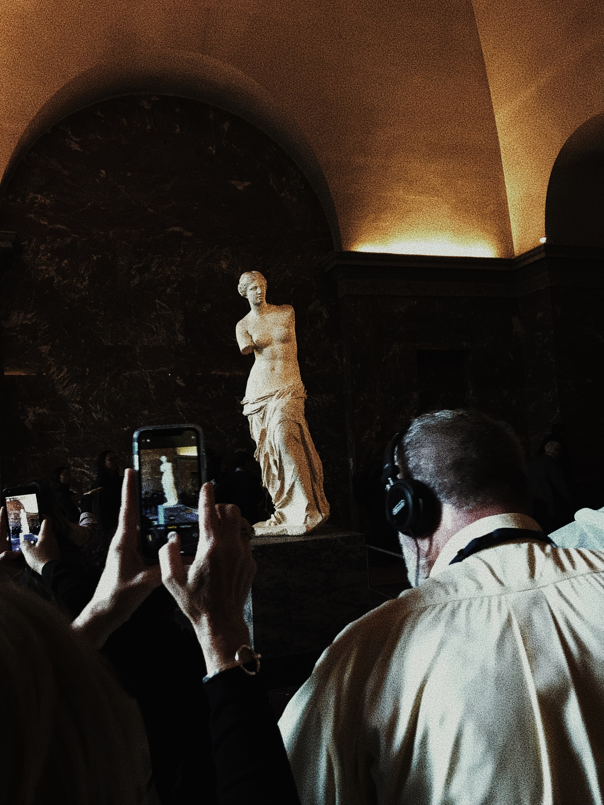
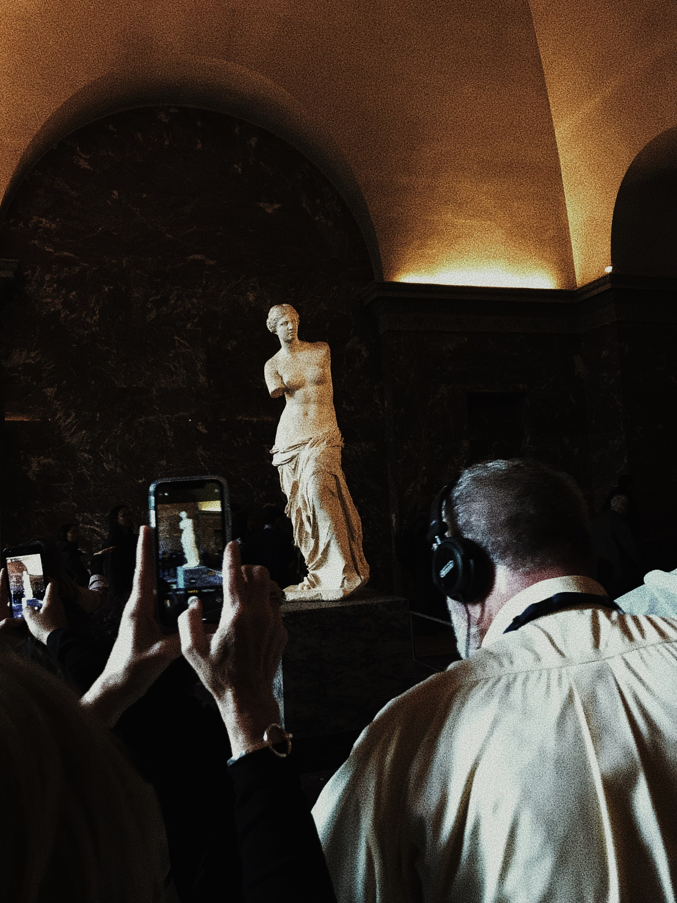

Louvre Museum
 


The Louvre museum is located inside the Louvre Palace, in the center of Paris, adjacent to the Tuileries Gardens. Builded over 800 years ago as a fortress to protect the city of Paris from invaders, the fortress was eventually torn down and replaced with a palace that served as the royal home of the French monarchy. By the 19th century, the Louvre had been transformed into a museum, open to the public. The Louver Museum is famous for plenty of reasons including the broad range of collection of art and artifacts, its impressive architecture, its historical significance, and impact on the world of art and culture. It is the world's most visited museum with over 7.8 million visitors in 2022, the Louvre is the world's most-visited museum location and visiting, with art pieces that spans work from ancient civilization to the 19th century. Some of the most iconic sensations include Mona Lisa and the Venus De milo. Explore the former palace of the kings of France – now the largest museum in the world covering almost 10,000 years of history! The palace now divides into three wings: Richelieu, Sully and Denon. Pick the sides to see from the” Mona Lisa”, “Ideal Greek Beauty” and “Wedding Feast at Canon”. When you finish your tour in the classical French Beauty, fuel up! And stop at the Le Comptoir du Louvre. Located 0.0 miles from the Louvre Museum serves French cuisine,European cuisine and much more..

The Louvre museum is located inside the Louvre Palace, in the center of Paris, adjacent to the Tuileries Gardens. Builded over 800 years ago as a fortress to protect the city of Paris from invaders, the fortress was eventually torn down and replaced with a palace that served as the royal home of the French monarchy. By the 19th century, the Louvre had been transformed into a museum, open to the public. The Louver Museum is famous for plenty of reasons including the broad range of collection of art and artifacts, its impressive architecture, its historical significance, and impact on the world of art and culture. It is the world's most visited museum with over 7.8 million visitors in 2022, the Louvre is the world's most-visited museum location and visiting, with art pieces that spans work from ancient civilization to the 19th century. Some of the most iconic sensations include Mona Lisa and the Venus De milo. Explore the former palace of the kings of France – now the largest museum in the world covering almost 10,000 years of history! The palace now divides into three wings: Richelieu, Sully and Denon. Pick the sides to see from the” Mona Lisa”, “Ideal Greek Beauty” and “Wedding Feast at Canon”. When you finish your tour in the classical French Beauty, fuel up! And stop at the Le Comptoir du Louvre. Located 0.0 miles from the Louvre Museum serves French cuisine,European cuisine and much more..